Administración de Memoria
La Abstracción del Espacio de Direcciones: Introducción
El tema fundamental sobre la administración de memoria se encuentre en la forma adecuada de representarla. La memoria física puede ser imaginada como un arreglo de direcciones de memoria una detrás de otra.

Esta “abstracción” es manejable mientras la cantidad de memoria necesitada esta en un rango “manejable” y cual es ese rango. En DOS (Disk Operating System) ese rango lo daba la elección de una arquitectura determinada, la del 8086, que permite tener direcciones de memoria de hasta 220 bits, es decir 1 MegaByte de memoria.
Los primeros sistemas
En los primeros Sistemas Operativos, en “the Early Days”, en los cuales el mismo S.O. se desplegaba en solo 64 KiloBytes de memoria, el resto de la misma estaba disponible para un único proceso ejecutándose a partir de los 64Kb de memoria física… en esos tiempos no había mucha “ilusión”, ver figura :
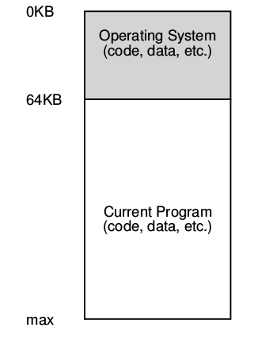
- No había muchas ilusiones en esta época.
- Los usuarios no esperaban mucho del sistema operativo.
- No había muchos usuarios de sistemas operativos.
El sistema operativo era mas o menos un conjunto de funciones o rutinas (específicamente una biblioteca) que se alojaba en la memoria empezando en la dirección física 0, y después existía un único programa en ejecución (un proceso) que se encontraba en la memoria física de la computadora, esta memoria era el resto no utilizado por el sistema operativo.
Multiprogramacion y time sharing
Después de un tiempo y debido a que las computadoras eran muy caras la gente empezó a compartir las computadoras de una manera mas efectiva la Era de la multi-programación había visto la luz del día (saw the ligth of the day):
En la cual más de un proceso estaba preparado para ser ejecutado en algún determinado momento, y el sistema operativo intercalaba dicha ejecución según la circunstancia. Haciendo esto se mejoro efectivamente el uso de la CPU, tal mejora en la eficiencia fue particularmente decisiva en esos días en la cual una computadora costaba cientos de miles o tal vez millones de dolares.
En esta era, múltiples procesos están listos para ser ejecutados un determinado tiempo 1 según el S.O. lo decidiese en base a ciertas políticas de planificación o scheduling. De todas formas había una computadora para varias personas aún.
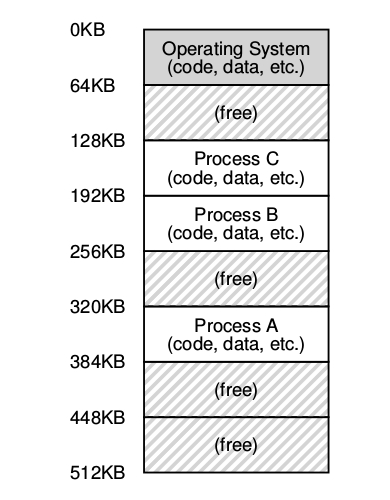
Rápidamente la demanda de mas computadoras, es decir, una computadora para una persona, dio el impulso para que la era del time sharing naciese.
-
Específicamente, muchos se dieron cuenta de las limitaciones de la computación batch, particularmente los programadores, los que estaban cansados de largos siclos de programar - debuguear.
-
La noción de interacción empezó a tomar importancia, esta interacción es pensada teniendo en cuenta que varios usuarios deberían poder concurrentemente utilizar una misma computadora, y cada uno de estos estaría esperando un determinado tiempo para obtener cierta respuesta de las tareas una respuesta del proceso que estaba ejecutando en ese momento, era vital.
-
Una forma de implementar el time sharing es aquella de:
- Un proceso por un determinado time slice o quantum de tiempo al cual se le da acceso a toda la memoria y los recursos.
- Hasta que éste debe detener su ejecución, grabar su estado 2: en algún lugar como por ejemplo el disco.
- Cargar otro proceso.
- Ejecutarlo por un rato, y así sucesivamente.
de esta forma se implementa una especie de time sharing rudimentario … desafortunadamente este método tiene un gran problema, es demasiado lento particularmente cuando la memoria de la computadora comienza a crecer.
Teniendo en cuenta que hacer un cambio de contexto a nivel registros es relativamente rápido hacer lo mismo con el contenido de la memoria hacia el disco es muy poco eficiente, por eso, es más fácil mantener los procesos en memoria, mientras se realizan los cambios de quien se esta ejecutando, de esa forma se permite implementar eficientemente time sharing.
La idea de los sistemas operativos time sharing apuntó a darle a cada proceso una pequeña parte de la memoria física:
A medida que el time sharing se empezó a hacer cada vez mas popular uno se podría preguntar cuales fueron las siguientes demandas sobre los sistemas operativos, la respuesta a esta pregunta se basa en la protección. Varios procesos ejecutándose en memoria podrían interactuar entre ellos y … porque sería eso un problema ?
El Espacio de Direcciones o Address Space
Crear un mecanismo que permita que la memoria física de una computadora sea utilizada de forma fácil y eficiente llevo paulatinamente a concebir el concepto de espacio de direcciones, la abstracción para la memoria.
El Address Space de un proceso contiene todo el estado de la memoria de un programa en ejecución.
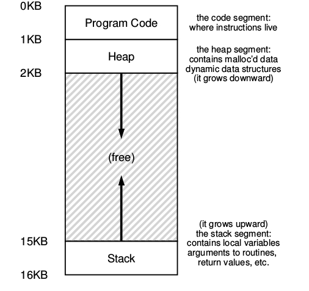 Por ejemplo:
- El código del programa tiene que estar alojado en la memoria en algún lugar.
- El programa mientras se esta ejecutando usa el stack para mantener registro de donde se encuentra en la cadena de llamadas a funciones o procedimientos para reservar espacios para las variables locales, para pasar parámetros y a su vez devolver valores de y hacia una rutina.
- Finalmente se utiliza el heap para reservar memoria de forma dinámica.
- Existen por supuesto otras cosas en la memoria: Variables estáticas, constantes, etc.
En el ejemplo, se presenta un pequeño espacio de direcciones de 16kb.
- El código fuente del programa vive en lo alto del espacio de direcciones empezando de 0 en este ejemplo y esta empaquetado en la primer 1k del espacio de direcciones. El código fuente es estático por ende se puede poner al principio del espacio de direcciones y no necesitará más espacio mientras que el programa se ejecute.
- Por otro lado hay dos regiones del espacio de direcciones que pueden crecer o achicarse mientras el programa se esta ejecutando. Como ya se sabe son el Heap y el Stack, debido a que ambas en algún momento van a querer crecer siempre se ponen en los extremos del espacio de direcciones enfrentadas entre si.
De esta forma se permite tal crecimiento solamente que el mismo se dirige a direcciones opuestas:
- El heap empieza justo después del código fuente y crece hacia abajo.
- El stack empieza al final del espacio de direcciones y crece hacia arriba.
Por supuesto que cuando se describe de esta forma el espacio de direcciones lo que se esta describiendo es la abstraccion que el sistema operativo provee para ejecutar un programa.
En realidad el programa no se encuentra en el rango de las direcciones de memoria física entre 0 y 16k.
Cuando el sistema operativo realiza esto, se dice que el sistema operativo esta virtualizando memoria porque el programa que se esta ejecutado piensa que esta cargado en una dirección de memoria particular, en este caso la 0 y tiene potencialmente un espacio de direcciones muy grande; la realidad es bastante diferente.
Cuando por ejemplo un proceso trata de cargar el contenido de la dirección 0, que a partir de ahora llamaremos la dirección virtual 0, de alguna forma el sistema operativo con ayuda de algún tipo de mecanismo de hardware que tendrá que asegurarse que no se cargue la dirección física 0 real más bien que se cargue la dirección física en la cual el espacio de direcciones de ese proceso se encuentra alojado.
El Espacio de Direcciones o Address Space es la abstracción fundamental sobre la memoria de una computadora. Consiste en dar un mecanismo fácil de usar a lo usuarios de la computadora.
Cuando se describe el espacio de direcciones se está describiendo la abstracción que el Sistema Operativo le proporciona al programa en ejecución sobre la memoria de la computadora.
Cuando el Sistema Operativo implementa esta abstracción, se dice que el O.S. está Virtualizando la Memoria ya que el programa en ejecución cree que está cargado en un lugar particular de la memoria (la posición 0 dirección virtual o virtual address) y tiene potencialmente toda la memoria para él3.
Conclusión
El sistema operativo tiene que virtualizar memoria… pero lo tiene que hacer con **estilo, para ello una de las metas principales de la virtualización es la transparencia.
EL sistema operativo debería implementar la virtualización de memoria de forma tal que sea invisible al programa que se esta ejecutando; es más el programa debe comportarse como si el estuviera alojado en su propia área de memoria física privada. Pero detrás de escena, el sistema operativo y el hardware hacen todo el trabajo para multiplexar memoria a lo largo de los diferentes procesos y por ende implementa la ilusión.
Otra meta importante de la virtualización es la eficiencia. El sistema operativo debe esforzarse para hacer que la virtualización sea lo más eficiente posible en términos de tiempo (no hacer que los programas corran mas lentos) y espacio (no usar demasiada memoria para las estructuras necesarias para soportar la virtualización).
Por ultimo, una tercera meta de la virtualización de memoria es la protección. El sistema operativo tiene que asegurarse de proteger a los procesos unos de otros como también proteger al sistema operativo de los procesos. Cuando un proceso realiza un load, un store, o un fetch de una instrucción este no tiene que ser capaz de hacerlo o afectar de ninguna forma al contenido de la memoria del proceso o del sistema operativo.
La protección por ende habilita una propiedad llamada aislamiento entre proceso; cada proceso tiene que ejecutarse en su propio caparazón aislado y seguro de los avatares de otros procesos con fallas o incluso maliciosos. Por ejemplo:
#include <stdio.h>
#include <stdlib.h>
int main(int argc, char *argv[]) {
printf("location of code : %p\n", (void *) main);
printf("location of heap : %p\n", (void *) malloc(1));
int x = 3;
printf("location of stack : %p\n", (void *) &x);
return x;
}
Este programa, al ser ejecutado, como resultado muestra:
location of code : 0x4005d6 location of heap : 0x1b71420 location of stack : 0x7fffa4d6fb54
¿qué observaciones pueden obtenerse del mismo? 4…
El API de memoria
Es importante, cuando se está trabajando con la memoria, cuáles son las funciones que permiten obtener y liberar memoria; y los errores comunes al utilizar estas herramientas. Además, también es importante saber los tipos de memoria que existen.
Tipos de Memoria
En un programa en ejecución existen dos tipos de memoria: Cuando se ejecuta un programa escrito en C existen dos tipos de memoria que se reservan.
- memoria de stack, su reserva y liberación es manejada implícitamente por el compilador en nombre del programador por esta razón a veces también se denomina memoria automática. La declaración de memoria en el stack en C es sencilla, se declara una variable de algún tipo de dato y el compilador se encarga de hacer el resto.
void func() {
int x; // declara un entero en el stack
. . .
}
Una vez que el código anterior se compila es el mismo compilador el que se ocupa de todo. Cuando inicia la función, el compilador es el que se encarga de obtener esa memoria por el programador.
- Heap Memory: este tipo de memoria es aquel que es obtenida y liberada explícitamente por el programador 5.
void func() {
int *x = (int *) malloc(sizeof(int));
. . .
}
malloc()
La utilización de la función Malloc() es bastante sencilla se le pasa la cantidad de bites que es necesaria reservar en el heap y si hay espacio en el mismo devuelve un puntero al nuevo espacio reservado, en caso de fallar devuelve un NULL.
Si bien esta forma de usar Malloc puede parecer sencilla hay que prestar mucha atención a la roa de utilizarla porque puede generar varios tipos de errores.
Una de las razones que puede llevar a que un programa crashee son las diferencias en la arquitectura en el cual fue compilado.
#include<stdlib.h>
double *d = ( double *) malloc( sizeof(double) );
. . .
tener en cuenta que malloc() devuelve un puntero de tipo void.
free()
De la misma forma en que la memoria es creada una ve que deja de utilizarse debe ser liberada, al igual que en la contabilidad el debe y el haber tiene que balancear si se ha reservado espacio para alguna cantidad X de memoria una vez que no se utiliza mas debe ser liberada, para ello se utiliza Free.
Esta función toma solamente un parámetro, el puntero que fue devuelto por Malloc.
Teorema <La memoria se crea y se destruye nunca se TRANSFORMA. Mariano Méndez
int *x = malloc( 10 * sizeof(int) );
. . .
free(x);
Errores comunes
- Olvidarse de obtener o alocar memoria :satisfied: … ¿un ejemplo?
- No obtener la suficiente memoria :flushed: …
- Olvidarse de inicializar la memoria obtenida :open_mouth: …
- Olvidarse de liberar memoria :sweat:
- Liberar memoria antes de terminar de usarla :persevere: …
- Liberar memoria repetidas veces … double free su resultado es INDEFINIDO :confounded:
Implementación
Como se vio, en ningún momento se hizo referencia a las System Call de memoria debido a que no existen tales system calls. el manejo de memoria esta orientado a llamadas a una biblioteca , en este caso
- brk(): cambia el lugar donde el programa termina o se rompe ( break), es decir el lugar donde el heap termina. Solo recibe un parámetro que es el lugar de la nueva direccion de fin del heap.
- sbreak(): hace lo mismo que break pero el parámetro es la cantidad de bytes.
Ver el man de estas syscalls, ya que lo interesante es su comportamiento según el parámetro pasado.
Address Translation
Existen dos puntos importantes a la hora de virtualizar memoria:
- la flexibilidad
- la eficiencia
Para llegar a ellos un buen mecanismo de virtualizacion de memoria debe ser lo mas flexible y eficiente posible.
Como se logra esto?
Mediante la utilizacion de una tecnica llamada Hardware-Based Address Translation o como más comúnmente se conoce Address Translation.
Con esta técnica el hardware trasnforma cada acceso a memoria, transformando la virtual address que es provista desde dentro del espacio de direcciones en una physical address en la cual la información deseada se encuentra realmente almacenada.
Entonces, en todos y cada una de las referencias a memoria un address translation es realizada por el hardware para redireccionar las referencias a la memoria de la aplicacion hacia las posiciones reales en la memoria física. Es evidente, que el hardware por si solo no puede virtualizar la memoria este solo provee un mecanismo de bajo nivel para poder hacerlo eficientemente.
El sistema operativo tiene que involucrarse en los puntos claves para setear al hardware de forma correcta para que esta traducción se de lugar; por eso debe entonces gerenciar la memoria, manteniendo información de en que lugar hay áreas libres y en que lugar hay áreas en uso, y por ultimo intervenir de forma criteriosamente como mantener el control sobre toda la memoria usada.
Otra vez, todo esto se trata de crear una bella ilusión: que el programa tenga su propia memoria privada donde reside su propio código y sus propios datos. Detras de esa realidad virtual existe o yace una fea verdad física que muchos programas se encuentran realmente compartiendo memoria a mismo tiempo que la CPU los cambia de estado ejecutando un único programa y el siguiente.
Address translation es el término por el cual se conoce al mecanismo, proporcionado por el hardware, que permite a partir de una dirección virtual obtener la dirección física correspondiente. Esa traducción es realizada por el hardware. El S.O. está en el medio de ese proceso y determina si el mismo se ha realizado correctamente. Lo que hace es gerenciar el manejo de la memoria:
- Manteniendo registro de que parte está libre.
- Que parte está en uso.
- Manteniendo el control de la forma en la cual la memoria está siendo utilizada.
Un ejemplo
El ejemplo ha sido extraído del capítulo 15 del libro de Arpacci. Se supone que es un proceso cuyo espacio de direcciones es el siguiente:
A continuación se mostrara un primer intento muy sencillo de como virtualizar memoria.
Especialmente se asumirán por ahora algunas cosas:
- El espacio de direcciones del usuario tiene que ser puesto de forma contigua en la memoria física.
- Para simplificar el espacio de direcciones no es demasiado grande específicamente es menor que el tamaño total de la memoria física.
- Finalmente se asumirá que cada espacio de direcciones es exactamente del mismo tamaño (Estos supuestos seguirán relajando con el tiempo)
Para saber porque se tiene que implementar el address translation y porque es necesario tal mecanismo se presentará un sencillo ejemplo. Éste es una pequeña secuencia escrita en código en C que carga un determinado valor, desde la memoria lo incrementa por tres y luego lo vuelve a guardar en la memoria.
El código C de este programa es el siguiente
void func {
int x = 3000;
x=x+3;
}
El compilador va a transformar esta linea de código C en assembly que se va a parecer al assemby de x86. para ver el assembly producido por el compilador puede utilizarse la herramienta de linux objdump or otool en mac os y el desensamblado del mismo es el siguiente:
128: movl ox0(%ebx), %eax ;carga 0*ebx en eax
132: addl $oxo3, %eax ;suma 3 al registro eax
135: movl %eax;0x0(%evx) ;guarda el contenido dax de regreso en la memoria
Este pequeño trozo de código es relativamente fácil de entender; este presupone que la dirección de la variable x ha sido guardada en el registro ebx y posteriormente carga el valor que se encuentra en esa dirección de memoria en el registro de opositor general eax utilizando para ello una instrucción movl ((movl -> move longword)). La siguiente instrucción le suma 3 al registro eax, y la instrucción final guarda el valor dax de vuelta en la memoria principal en la misma posición de memoria.
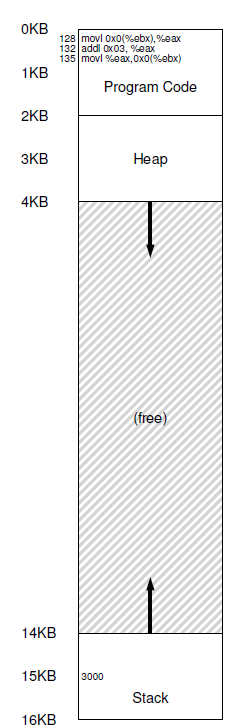
Lo importante de este ejemplo es que desde el punto de vista del programa o proceso el espacio de direcciones comienza en 0 termina en 16Kb; y todas las referencias a direcciones generadas deben estar acotadas a esos valores.
Entonces el problema es que obviamente en la memoria física se tiene únicamente un valor 0 y un valor 16kb disponibles:
- ¿Cómo se re-ubica el proceso en memoria de forma que esto sea transparente para el proceso?
- ¿Cómo se provee la ilusión de un espacio virtual de direccionamiento que comience en 0 para cada proceso?
Se puede ver como ambos, el código fuente y los datos son puestos en el mismo address space; la secuencia del código de las 3 instrucciones están localizadas en la dirección 128 en la sección de código cercano al inicio del address space, y el valor de la variable x se encuentra en la posición 15kb hacia abajo en el stack cerca del final del address space. Inicialmente el valor de x es 3. Cuando las 3 instrucciones son ejecutadas desde la perspectiva del proceso los siguientes accesos a memoria se realizan.:
- Se va a buscar la instrucción a la dirección 128
- Se ejecuta esa instrucción (se carga en un registro la dirección 15 kb)
- Se va a buscar la instrucción a la dirección 132
- Se ejecuta esta instrucción (no hay referencias a memoria)
- Se va a buscar la instrucción a la dirección 135
- Se ejecuta esta instrucción (guardar el contenido en registro en la dirección 15kb)
Desde la perspectiva del programa, su espacio de direcciones empieza en 0 y crece hasta un máximo de 16 kb; todas las referencias de memoria que esta genera tiene que estar dentro de esos limites.
Si bien para virtualizar memoria el sistema operativo tiene que ubicar el proceso en algún lugar de la memoria física no necesariamente cerca de la dirección física 0.
Entonces se tiene el siguiente problema:
¿Cómo se re-ubica el proceso en memoria de forma tal que esto sea transparente para el proceso?
¿Cómo se provee la ilusión de que una space address virtual empieza en la posición 0 cuando en realidad ese address space esta re-ubicado en algún lugar en otra dirección física.
Un ejemplo de como tendría que verse la memoria física una vez que el addres space del proceso es puesto en memoria puede verse en la figura a continuación:

En la figura se puede ver al sistema operativo que utiliza los primeros slot de memoria física para el mismo y que se ha re-ubicado al proceso anterior arriba de la dirección física 32 k.
Dynamic Realocation o Memoria Segmentada
Para ir ganando comprensión sobre el hardware-based address trasnlation, se verá su primera implementación, introducida en las primera máquinas que utilizaban time-sharing hacia el fin de los años 50, es una idea simple llamada base y segmento también puede ser vista como dynamic realocation.
Específicamente solo se necesitan dos registros de hardware dentro de cada cpu: Uno llamado registro base y el otro registro límite o Segmento.
Este par base-limite va a permitir que el address space pueda ser ubicado en cualquier lugar deseado de la memoria física, y se hará mientras el sistema operativo se asegura que el proceso solo puede acceder a su address space.
En esta configuración, cada programa es escrito y compilado como si fuera cargado en la dirección física 0. A su vez cuando se inicia la ejecución del programa el OS decide en que lugar va a cargar el mismo y para hacerlo setea el registro base en un determinado valor. Algunas cosas interesantes pasan cuando el proceso se esta ejecutando. A partir de ahora cuando cualquier referencia es generada por el proceso es traducida por el procesador de la siguiente manera:
physical address = virtual address + base
Cada referencia de memoria generada por el procesador es una dirección virtual; el hardware cada vez que se hace referencia a esta dirección tiene que sumar el contenido del registro base y su resultado es la dirección física que tiene que ser utilizada en la memoria del sistema.
Veamos esto con el ejemplo planteado:
compilador puede utilizarse la herramienta de linux objdump or otool en mac os y el desensamblado del mismo es el siguiente:
128:movl 0x0(%ebx), %eax
- El contador de programa es inicializado en 128; cuando el hardware necesita obtener esta instrucción, primero se suma el valor del registro base 32kb (32768) para obtener la dirección de memoria física 32896.
- Una vez obtenida esta dirección el hardware obtiene la instrucción que esta almacenada en esa dirección física.
- A continuación el procesador empieza a ejecutar la instrucción.
- En un determinado punto el proceso necesita cargar el contenido de la dirección virtual 15 kb, entonces el procesador toma y otra vez le suma el registro base, obteniendo finalmente la dirección física de 47k y por ende el contenido deseado.
El proceso que transforma la virtual address en la physical address es exactamente la técnica conocida como address translation. Esto es el hardware toma una dirección virtual a la cual el proceso cree que esta referenciando y la transforma en una dirección física que es el lugar en el cual realmente los datos están ubicados. Debido a que esta ubicación sucede en run-time y debido a que se puede mover el address space incluso una vez que el proceso empezó a ejecutarse la técnica habitualmente es referenciada como dynamic realocation o realocación dinámica.
Ahora la pregunta es: que pasa con los bound registers o registro de segmento…
El registro bound está allí para ayudar con la protección. Específicamente, el procesador antes que hacer nada va a checkear que la referencia de memoria este dentro de los limites del address space para asegurarse que la misma sea legal, en el ejemplo anterior el bounds regiter esta configurado en 16 kb.
Si un proceso genera una dirección virtual que es mayor que los límites o una dirección que es negativa la CPU va a generar una excepción y el proceso va a terminarse.
El punto es que los límites están ahí para asegurarse ue todas las direcciones generadas por el proceso sean legales y estén dentro del límite del mismo.
Se habrá notado que el registro base y el límite son estructuras de hardware mantenidas dentro del mismo procesador o chip. Antiguamente a esa parte del procesador que ayudaba a la address translation se la llamaba memory management unit (MMU). A medida que se fueron sofisticando las técnicas de gerenciamiento de memoria se fue agregando mas circuiteria a lo que se llamaba MMU.
Un pequeño detalle sobre el bound register, puede ser definidos en dos formas diferentes:
-
la primera: este regstro mantiene el tamaño del address space entonces el hardware checkea la dirección vitual contra el bound register, sumándole primero el registro base.
-
la segunda es mediante el bound register almacena la dirección física del fin del espacio de direcciones.
Address Translation con Tabla de Segmentos
El problema de la técnica anterior es que se tiene un solo registro registro base y solo un segmento. La mejora a este método es mediante la aplicación de un pequeño cambio: en vez de tener un solo registo limite, se tiene un arreglo de pares de (registro base, segmento) por cada proceso:
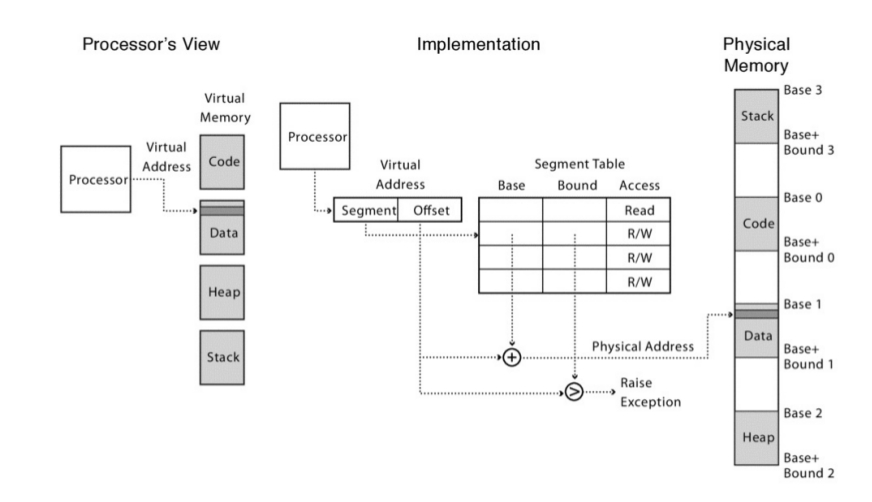
cada entrada en el arreglo controla una porción del virtual address space. La memoria física de cada segmento es almacenada continuamente, pero distintos segmentos pueden estar ubicados en distintas partes de la memoria física.
Una dirección virtual tiene dos componentes:
- un numero de segmento
- un offset de segmento
El numero de segmento es el indice de la taba para ubicar el inicio del segmento en la memoria física. El registro bound es chequeado contra la suma del registro base+offset para prevenir que el proceso lea o escriba fuera de su región de memoria.
En una dirección virtual utilizando esta técnica, los bit de mas alto orden son utilizados como índice en la tabla de de segmentos. El resto se toma como offset y es sumado al registro base y comparado contra el registro bound. El numero de segmentos depende de la cantidad de bits que se utilizan como indice.
El error de Segmentation Fault era un error que se daba cuando, en las máquinas que implementaban segmentación, se quería direccionar una posición fuera del espacio direccionable. Increíblemente este error aun se utiliza en sistemas operativos que no usan segmentación.
Algunas notas:
- El stack crece hacia atrás o backward, por ende el hardware necesita saber sobre eso …. en un bit de información
- Compartir: a veces es necesario poder compartir ciertos segmentos entre varios procesos, para ello el hardware necesita proporcionar un mecanismo , otro bit que permita saber si se puede ejecutar, escribir o leer por varios procesos a la vez. Para ello se usan un par de bits llamados protection bits.
- Todo lo hace el hardware en este caso la MMU (Memory Mangement Unit).
- Segmentación de grano fino vs segmentación de grano grueso. La primera consiste en tener muchos segmentos pequeños y la segunda consiste en tener pocos segmentos grandes.
El problema de la segmentación es la fragmentación, precisamente la fragmentación externa:
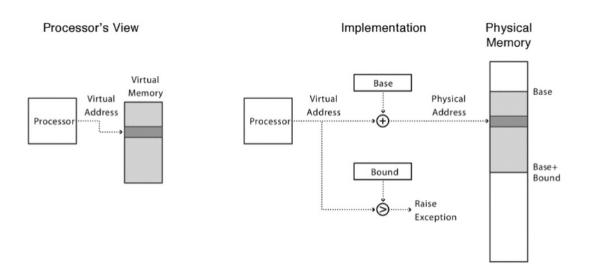
Un ejemplo de la arquitectura x86: Real Mode
Únicamente los procesadores 8086 y 8088 operan exclusivamente en modo real, que no existe en el modo de 64 bits de Pentium4 y Core2. El Modo Real de Operaciones permite direccionar al procesador solo los primeros 1 Mbytes de la memoria de una computadora 1. Windows no utiliza el modo real. El Modo Real permite a las aplicaciones escritas para 8086 y 888 correr en los procesadores 80286 hacia arriba, por ello en cualquier caso los procesadores arrancan en modo real. La familia de procesadores de Pentium 4 y Core2 en modo de 64 bits no pueden correr modo real, por ello las aplicaciones DOS no son compatibles.
Segmentos y offsets
Una combinación de segmento y offset permiten determinar una posición de memoria en modo real. Una dirección de memoria en modo real consiste en un segmento de memoria y un offset.
La segment address se encuentra en uno de los registros de segmento los cuales apuntan a un segmento de memoria de 64 KB. La offset address apunta a cualquier dirección de memoria dentro de un segmento de 64 kb. Los segmentos en Modo Real siempre tiene una longitud de 64Kb, ver imagen:
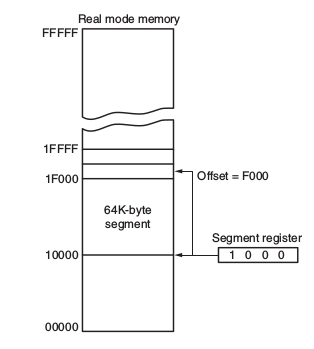
en este modo puede mapearse toda la memoria de la siguiente forma: inicio de la memoria es 00000xh —> una dirección de memoria en modo real es de 20 bits, por ende el primer segmento se encuentra en 00000xh+64kb = 00000xh+ffffxh.
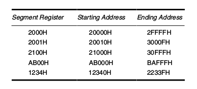
Si por ejemplo se tiene el segmento 10000xh la dirección de inicio de ese segmento es 10000xh y la dirección de fin de ese segmento es 1ffffxh. el fin de la memoria direccionable en Modo Real es fácilmente calculable pues es 2 20 que es exactamente 1MB de memoria.
Algunas veces una dirección de memoria en Modo Real puede ser escrito como segmento:offset, por ejemplo 10000:f000.
Combinaciones Especiales
En modo real existen una serie de reglas que aplican a los registros de segmentos y offsets. Estas reglas son:
- CS:IP localiza la próxima instrucción a ser ejecutada en modo real.
- SS:SP localiza la dirección del puntero al stack, a veces también puede ser SS:BP.
- DS: BX,DI,SI localizan el puntero a una dirección de memoria dentro del data address.
- ES:DI puntero al extra data address donde van los strings.
esta distribución es para 16 bits. La misma distribución para 32 bits es la siguiente:
- CS:EIP intruction address.
- SS:ESP o SS:EBP stack addres.
- DS:EAX,EBX,ECX,EDI,ESI data address.
- ES:EDI Estring destination address.
- FS:no default general address.
- GS:no default general address.
Ejemplo de dos procesos que comparten el code segment, pero con stack y data segment separados:
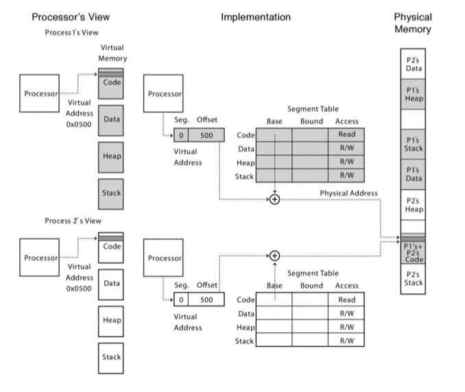
Modo Protegido X86
El modo protegido permite direccionar a datos y programas más allá de 1 Mb de memoria física, así como también dentro del primer mega de memoria física.
Éste es el modo donde Windows opera, este modo requiere por ende un cambió en el esquema utilizado en el modo real segmento y desplazamiento u offset para direccionar memoria.
Cuando los programas y los datos son alojados o direccionados a la memoria extendida, el offset address todavía es utilizado para acceder dentro de un segmento de memoria.
La diferencia es que el segmento de memoria, como el que se presenta en el modo real ya no está presente como tal en modo protegido. En lugar de la dirección del segmento, el segment register contiene un valor llamado selector que representa un descriptor de una tabla llamada tabla de descriptores o descriptor table .
Este descriptor posee la información la ubicación del segmento de memoria , la longitud y los derechos de acceso. Debido a que el registro de segmento y el offset todavía son un acceso a memoria, las instrucciones de modo protegido son idénticas a las instrucciones de modo real.
La diferencia entre los modelos es la forma en la cual el registro de segmento es interpretado por el microprocesador para acceder a la memoria.
Otra diferencia es que en procesadores a partir de el 80386 el offset puede ser un número de 32bits, en vez de 16bits lo que permite al micro procesador acceder a posiciones de memoria hasta 4GBytes.
Selectores y Descriptores
- El selector, que se encuentra en el registro de segmento , selecciona una de los 8192 descriptores de una de las dos tablas de descriptores.
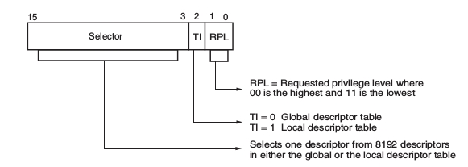
- El descriptor describe el lugar, la longitud y los derechos de acceso del segmento de memoria, y tiene una longitud de 4 bytes.
Por ejemplo, en modo real si CS=0008xh esto significaba que apuntaba a la dirección 00008xh de la memoria física de la computadora. Ahora en modo protegido el tema es así:
-
Existen tablas de descriptores usadas con los registros de segmento:
Una contiene los descriptores globales: contiene las definiciones de los segmentos que pueden ser accedidos por todos los programas.
Otra contiene los descriptores locales: contienen definiciones de segmento que pertenecen únicamente a una determinada aplicación.
Cada descriptor ocupa 4 bytes de memoria, ver imagen.También pueden verse escritos como System descriptors y application descriptors.
- Cada tabla tiene 8192 entradas, por un total de 16384 descriptores que estan disponibles para cualquier aplicación en cualquier momento, entonces como se dijo que los offset pueden ser de 32 bits es decir 4gb de offset, la cantidad total de memoria física direccionable es 232* 16384 = 64 TBytes de memoria.
Notar que cada entrada en la tabla de descriptores es de 8 bytes, la dirección base o base address es de 24 bits y los segmentos son de 16 Mbytes o sea 224
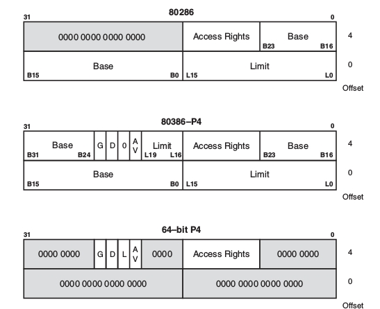
- El segment limit el offset de la última dirección, en un procesador 80286 la base address es f00000xh y el límite es 00ffxh, para el 80386 en adelante la base address es 00f00000xh y el limite es 000ffxh. Por ende:
- 80286 tiene 16 bit de límite lo que hace que pueda acceder entre 1 y 64 kb de largo.
- 80386 - Pentium 4 tiene 20bits de límite, lo que hace que los segmentos de memoria estén entre 1 y 1 Mb o 4k y 4 Gb de longitud.
En el gráfico a continuación se muestra un ejemplo concreto:
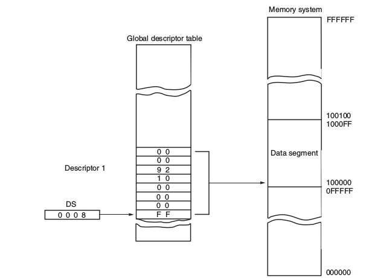
Memoria Paginada
Una alternativa a la memoria segmengata es la memoria paginada. Con la paginación, la memoria es reservada en pedazos de tamaño fijo llamados page frames. El address translation es similar a como se trabaja con la segmentación. En vez de tener una página de segmentos cuyas entradas contienen punteros a segmentos, hay una tabla de páginas por cada proceso cuyas entradas contienen punteros a las page frames. Teniendo en cuenta que los page frames tienen un tamaño fijo, y son potencia de 2,las entradas en la page table sólo tienen que proveer los bit superiores de la dirección de la page frame. De esta forma van a ser más compactos. No es necesario tener un límite; la página entera se reserva como una unidad.
Vista Lógica:
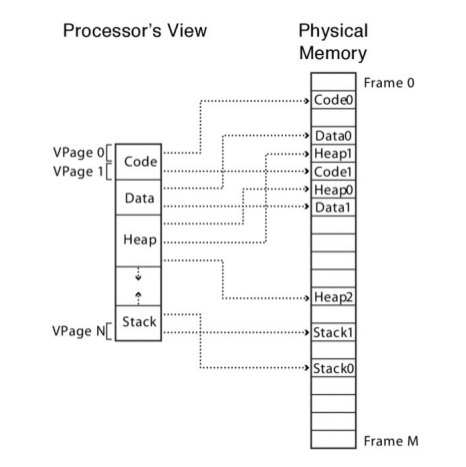
Address translation con Page Table
La vitual address tiene dos componentes:
- El número de página virtual.
- El offset dentro de esa página.
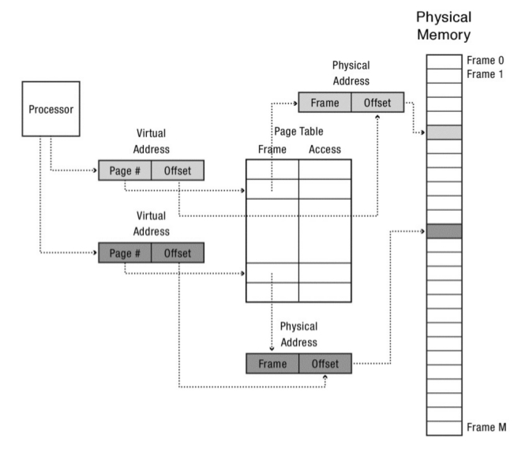
El número de la página virtual es el índice en la page table para obtener el page frame en la memoria física. La dirección física está compuesta por The Phisical Frame Page que se obtiene de la page table concatenado con el offset de la página que se obtiene de la virtual address. El sistema operativo maneja los accesos a la memoria.
Una de las cosas que pueden parecer raras sobre la paginación es que si bien el programa cree que su memoria es lineal, de hecho, su memoria está desparramada por toda la memoria física como si fuera un mosaico.
El procesador va a ejecutar una instrucción después de otra usando direcciones virtuales y esas direcciones virtuales son lineales. Si bien la instrucción ubicada en el final de una página podría estar ubicada en una región completamente diferente de la memoria física de la próxima instrucción que debe empezar en la siguiente página.
Las estructuras de datos que también son contiguas usando direcciones virtuales, en la realidad, una matriz muy grande podría estar desparramada por distintos page frames físicos.
La paginación encuentra el mismo problema que la segmentación, saber qué espacio de la memoria está vacío es muy complicado.
Paginación de memoria en x86
El mecanismo de paginación de memoria que aparece a partir de los procesadores intel 80386 y sus subsiguientes modelos permite que cualquier lugar de la memoria física o physical address sea asignada a cualquier dirección lineal o lineal address.
Una dirección lineal (a) se define como una dirección de memoria generada por un programa.
Una dirección física (b) es el lugar actual de la memoria al que accede un programa.
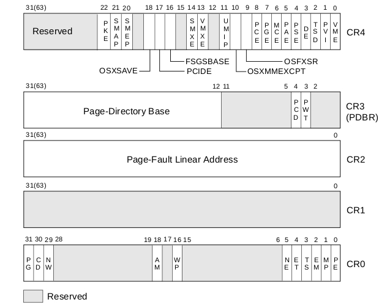
Con la unidad de paginación de memoria es posible que cualquier lineal address sea asignada a una determinada physical address, lo que permite que un programa escrito para funcionar en una determinada dirección sea re-ubicada por el mecanismo de paginación de forma transparente.
Los Registros de Paginación
La unidad de paginación es controlada por el contenido de los registros de control de microprocesador.
Estos registros se encuentran a partir del microprocesador intel 80386 hasta Core2. A partir del Pentium4 un registro llamado CR4 extiende la arquitectura x86, por ejemplo haciendo que las páginas de memoria sean en vez de 2MBytes de 4Mbytes ( esto lo controla el CR4).
Los registros importantes para la paginación son: CR0 y CR3.
-
El bit mas a la izquierda de el registro CR0 si está en 0 determina que la lineal address se convierte directamente en physical address para acceder a la memoria. Si PG está en 1 la lineal addres debe ser convertida en physical address a través del mecanismo de paginación.
-
CR3 contiene page directory base que contiene 1024 entradas de 4 bytes cada una, cada entrada en el page directory ocupa 4 bytes y direcciona a una page table que contiene 1024 entradas.
Una linear address generada dentro del espacio de memoria de un proceso está compuesta de tres partes:
- Page Directory bits 31-22 (10 bits)
- Page Table Entry bits 21-12 (10 bits)
- Memory Page offset address bits 11-0 (12 bits)
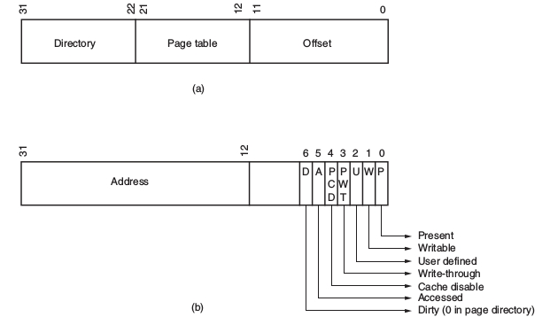
Cada entrada en el page directory representan 4 MBytes de memoria del sistema, esto significa que 00000000xh-00000fffxh selecciona la page directory entry 0, la page table entry 0 y un rango de 4kBytes de offset. Entonces, si por ejemplo si la entrada 0 page table contiene la dirección 00100000xh entonces significa que la dirección fisica 00100000xh-00100ffffxh corresponden a las linear address 00000000xh-0000ffffxh
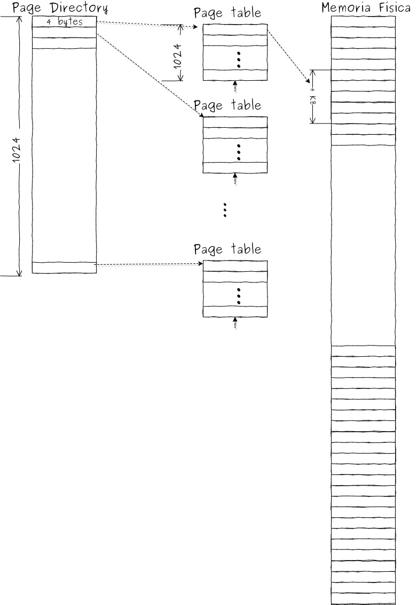
Tener en cuenta que en procesadores desde Pentium a Core2 las páginas pueden ser de 4kBytes, 2Mbytes o 4 Mbytes
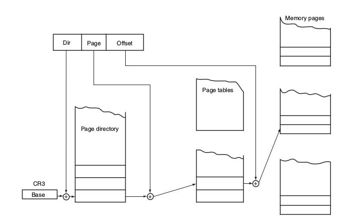
Translation multilevel
Si se desea implementar un mecanismo eficiente de paginación, posiblemente elegir un arreglo no sea la solución más correcta. Un árbol o un hash table son más apropiados ya que son usados en sistemas más modernos.
Muchos sistemas utilizan técnicas de address trasnslation basados en arboles, si bien los detalles varían de sistema en sistema y la terminología también es un poco confusa, sin embargo estos sistemas que se describirán a continuación tienen propiedades bastantes similares. Estas técnicas soportan:
- Protección de memoria de grano fino
- Memoria Compartida
- Ubicación de memoria flexible
- Reserva eficiente de memoria
- Un sistema de búsqueda de espacio de direcciones eficiente
Si bien todos los sistemas multinivel de address translation usan paginación en el nivel mas bajo del arbol; la principal diferencia entre ellos es como se llega a la page table a nivel de las hojas del árbol, ya sea usando segmentacion mas paginación, múltiples niveles de paginación, segmentación mas múltiples niveles de paginacion.
Paged Segmentation ( Segmentación paginada)
Este sistema utiliza dos niveles de un árbol. Con paged segmentation, la memoria esta segmentada, pero en vez de que cada entrada en la pagina de segmentos apunte directamente a una región continua de la memoria física, cada entrada en la tabla de segmentos apunta a una tabla de paginas, que a su vez apunta a la memoria correspondiente a ese segmento. La tabla de segmentos tiene una entrada llamada limite o tamaño que describe la longitud de la pagina de tablas, osea la longitud de los segmentos en las paginas. El proceso de traducción de virtual address a physycal address es el siguiente. la virtual address tiene 3 componentes: un numero de segmento, un numero de pagina virtual dentro de ese segmento y el offset dentro de la pagina. El numero de segmento es el indice para la segment table que aloja la page table para se segmento. La page number de esa virtual address es el indice de la page table (que pertenece a un segmento se la segment table) que contiene una page frame en la memoria fisica. La physical address esta compuesta por el physical page frame que pertenece a la page table concadenado con el offset de la virtual address.
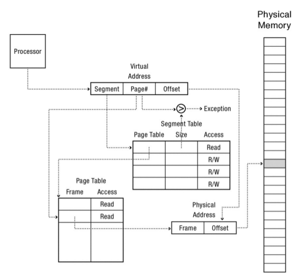
Address Translation con Tres Niveles de Page Tables
Este es un ejemplo concreto del sistema conocido como multi-levelpaging es similar a la paged segmentation, pero implementa multiples niveles de page tables. El procesador de sun microsystem sparc usa un sistema de 3 niveles de tablas de paginas.
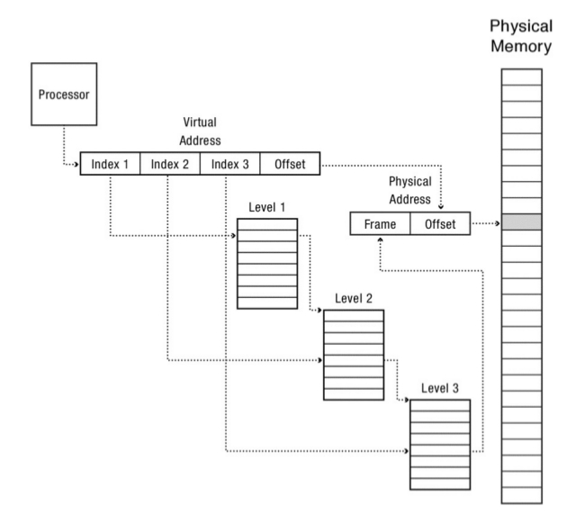
Address Translation con Tabla de Hash por Software
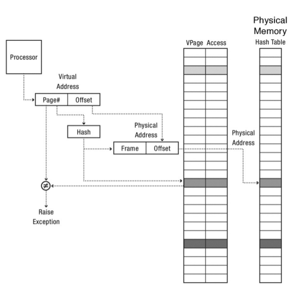
Multilevel page segmentation
Este es el sistema ultilizado por las arquitecturas x86 para 64 y 32 bit.
En la arquitectura x86 cada proceso posee una Global Descriptor Table (GDT), que es equivalente a la segment table. La GDT es almacenada en la memoria; cada entrada a esta tabla apunta a una tabla de paginas (multinivel) para ese segmento. Para inicializar el proceso de address translation el sistema operativo setea la GDT e inicializa un registro llamado gdtr GDTR que contiene la dirección y la longitud de la GDT.
Por cada 32 bit en la arquitectura x86 la virtual address posee un segmento a una tabla de 2 niveles:
- Los primeros 10 bit de la virtual address son el indice de la paged table de primer nivel, llamada page directory,
- los otros 10 bit son el indice de una page table de segundo nivel
- y finalmente los 12 bit restantes son el offset dentro de la pagina.
Cada entrada en la page table ocupan 4 bytes y existen 1024 entradas por ende el tamaño total de la page directory es de 4k, sucede lo mismo con la page table de segundo nivel y justo coincide con el tamaño de una pagina en la memoria física.
Hacia una eficiente Address Translation
Hasta aquí ya uno puede estar un poco cansado de todos los mecanismos de hardware para realizar la traducción de direcciones de memoria. El tema que muchos de estos métodos tiene varios niveles, hasta 4 en algunos casos, para alcanzar una dirección física, entonces eso lo hace realmente poco práctico para el procesador. A continuación se mostrarán mecanismos para mejorar el rendimiento de la traducción de las direcciones.
Para ello se usara un caché (o escondrijo), que consiste en una copia de ciertos datos que pueden ser accedidos mas de una vez más rápidamente. El concepto de Cache es ampliamente utilizado en muchas ramas de las ciencias de la computación: arquitectura de computadoras, sistemas operativos, sistemas distribuidos.
Uno de los problemas del address translation reside en la velocidad de la traducción para ello se utilizan técnicas que mejoran la velocidad de esta traducción. Para mejorar el address translation se utiliza un mecanismo de hardware llamado translation-lookaside buffer; o tambien conocido como TLB. La TLB es parte de la MMU y es simplemente un mecanismo de cache de las traducciones mas utilizadas entre los pares virtual to physical address. Por ende un mejor nombre para este mecanismo podría ser address translation cache.
Por cada referencia a la memoria virtual, el hardware primero chequea la TLB para ver si esa traducción esta guardada ahí; si es así la traducción se hace rápidamente sin tener que consultar a la page table (la cual tiene todas las traducciones).
Este mecanismo tiene un tremendo impacto en la velocidad de la traducción.
Lookaside buffer
Si uno se pone a pensar la forma en que se programa, ésta tiene dos características: es secuencial y localizada:
...
mov r1,r2
mult r1,r2
...
El hardware tiene que hacer el fetch de la instrucción add, después pasear por todos los multiniveles de las tablas de traducción para encontrar la dirección física de la instrucción add; ejecutar la instrucción , incrementar el contador de programa y volver a hacer todo esto otra vez para la próxima instrucción y además para sus datos pero esto es muy ineficiente.
La Translation Lookaside Buffer (TLB) es una pequeña tabla a nivel hardware que contiene los resultados de la recientes traducciones de memorias realizadas. Cada entrada de la tabla mapea una virtual page a una fisical page
TLB entry = {
virtual page number,
physical page frame number,
access permitions
}
Normalmente se chequean todas las entradas de la TLB contra la virtual page, si existe matcheo el procesador utiliza ese matcheo para formar la physical address, ahorrándose todos los pasos de la traducción.
Esto se llama un TLB hit
Cuando del proceso anterior no existe matcheo en la TLB , se dice que se tiene un TLB miss 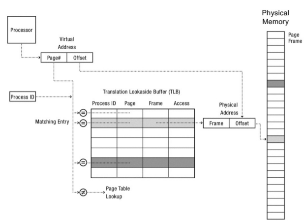
Pareciera que este proceso es mas costoso, pero a nivel procesador tiene una ganancia muy buena en prestaciones ya que a nivel hardware está implemetado en memoria estática on chip que está localizada muy cerca del procesador.
Si el primer nivel de la TLB produce un TLB miss existe otro nivel, que guarda más datos, y este es consultado y la traducción se realiza si se falla en ambos niveles 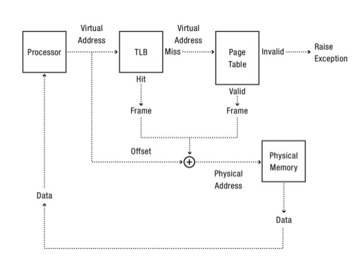
La TLB
Teniendo en cuenta los siguientes supuestos: una page table lineal (un arreglo) y una TLB que es manejada esencialmente por el hardware, el mecanismo de funcionamiento a groso modo debería ser el siguiente:
- Primero se extrae la virtual page number (VPN) de la virtual address y se chequea si la TLB tiene esa traducción para esa VPN. Si existe esa traducción se tiene un TLB HIT que significa que la TLB posee esa traducción.
- A partir de ahí, se puede extraer el Page Frame Number (PFN) de la entrada en la TLB
- Se concatena con el offset de la virtual address original y con ello se forma la physical address deseada y se accede a la memoria (suponiendo que todos los chequeos de protección no fallaron).
Si la CPU no encuentra esa traducción en la TLB (se tiene un TLB MISS), hay que hacer un poco más de trabajo para obtener la physical address. En este ejemplo:
- El hardware accede la page table para encontrar la traducción
- Suponiendo que la referencia a la memoria virtual generada por el proceso es valida y accesible se actualiza la TLB con la traducción hecha por el hardware. Este conjunto de acciones es costoso debido a que existen accesos extras a memoria.
- Finalmente, una vez que la TLB fue actualizada, el hardware vuelve a buscar la instrucción en la TLB y por ende la referencia a la memoria es procesada rápidamente.
Como todo cache, la TLB, está construida bajo la premisa que el ** caso común ** es que la traducción sea encontrada en el cache. Por ende poco es el costo que se agrega ya que la TLB esta ubicada en cercanías del núcleo que esta realizando el procesamiento y de hecho esta diseñada para ser muy rápida.

Cuando un MISS ocurre se incurre en el alto costo de la paginación; la page table tiene que ser accedida para encontrar la traduccion correspondiente incurriendo en referencias extras a memoria. Si esto sucede mucho el programa va a parecer que se esta ejecutando lentamente.
Un pequeño ejemplo: accediendo a un arreglo
En este ejemplo se asumirá que se tiene un arreglo de 10 números enteros de 4 bytes en memoria cuya dirección virtual inicial es 100. Asumiendo además que se tiene un pequeño espacio de direcciones virtual de 8 bits con paginas de 16 bytes, entonces una virtual address se divide en 4 bits (que representan 16 paginas virtuales) y offsets de 4 bits (que representan los bytes de cada una de estas páginas). Es decir, el espacio de direcciones esta compuesto por 16 paginas y cada página posee 16 bytes.

Entonces teniendo en cuenta la imagen el primer elemento del arreglo a[0] empieza en la vpn=06 offset=04, tener en cuenta que en esa página solo encajan 3 enteros de 4 bytes (a[0], a[1], a[2]), el arreglo después continua en la siguiente página vpn=07 ocupando las 4 entradas (a[3], a[4], a[5], a[6]) . Y finalmente las últimas 3 entradas del arreglo (a[7], a[8], a[9]) se localizan en la siguiente pagina del espacio de direcciones VPN=08.
Considerar el simple caso de un siclo que accede a cada elemento del arreglo por ejemplo escrito en C:
int sum = 0;
for (i = 0; i < 10; i++)
sum += a[i] ;
Para simplificar la explicación solo se tendrá en cuenta los accesos de memoria del ciclo generados para el arreglo entonces cuando el primer elemento del arreglo es accedido, la CPU tiene que cargar la virtual address 100.
- El hardware extrae la VPN para esta dirección (VPN=06) y utiliza eso para validar en la TLb la traducción.
- Asumiendo que es la primera vez que el programa accede al arreglo el resultado de esta operación va a ser una TLB MISS el próximo acceso a un elemento del arreglo, va a generar un TLB HIT, debido a que el segundo elemento esta puesto a continuación del primero y vive por ende en la misma pagina; y debido a que ya se ha accedido a esa pagina la primera vez que se accedió al arreglo, esta traducción se encuentra cargada en la TLB.
- Acceder al tercer elemento del arreglo va a caer en la misma situación, otro HIT porque este también vive en la misma pagina.
- Desafortunadamente cuando el programa quiere acceder al elemento 4 a[3] se encontrara con otro TLB MISS. Sin embargo, otra vez los elementos 5, 6 y 7 del arreglo van a ser TLB HIT, ya que estos residen en la misma pagina de memoria,
- finalmente cuando se acceda al octavo elemento otra vez se obtendrá un TLB MISS. El hardware volverá a consultar la page table para averiguar la ubicación de esa pagina virtual en la memoria física y por ende actualizara la TLB de acuerdo a eso. Los últimos 2 accesos reciben un beneficio porque la TLB se encuentra al día, logrando que la TLB obtenga 2 HIT como resultado.
Entonces resumiendo la actividad de la TLB durante los 10 accesos al arreglo: 3 MISS y 7 HIT por lo tanto se obtuvieron un 70 % de HIT.
Si bien no resulta una mejora increíble la TLB permite una mejora debido a la localidad espacial de los datos. Teniendo en cuenta un ultimo factor si se supone que el programa ni bien termina el ciclo vuelve a acceder al arreglo se vería que el resultados de HITs seria de un 100% debido a la localidad temporal.
###Que contiene la TLB
Una TLB típica puede tener entre 32, 64, o 128 entradas y ser lo que se llama fully associative. Básicamente esto quiere decir que cualquier traducción puede encontrarse en cualquier lado de la TLB. Una entrada de la TLB contiene los siguientes datos: VPN PFN otros bits ALgunos de los “otros bits” son
- bit de validez
- bits de protección (ejecución lectura)
- dirty bit entre otros